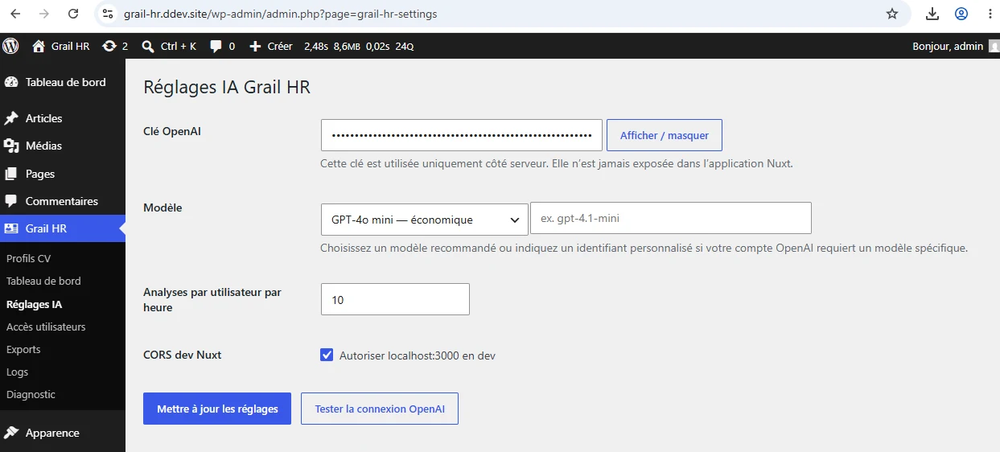
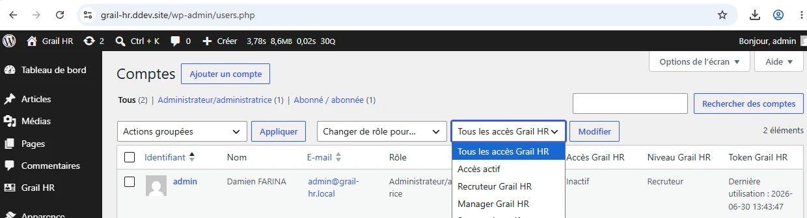
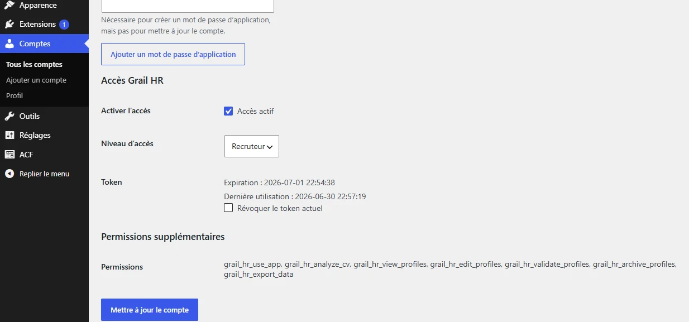
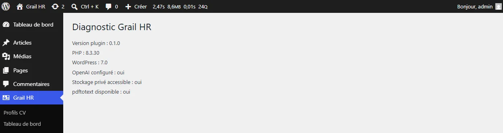

Configurer, superviser et exploiter le prototype.
L’administration WordPress complète l’application Nuxt : réglages IA, accès utilisateurs, exports, logs et diagnostic.






L’administration WordPress complète l’application Nuxt : réglages IA, accès utilisateurs, exports, logs et diagnostic.



